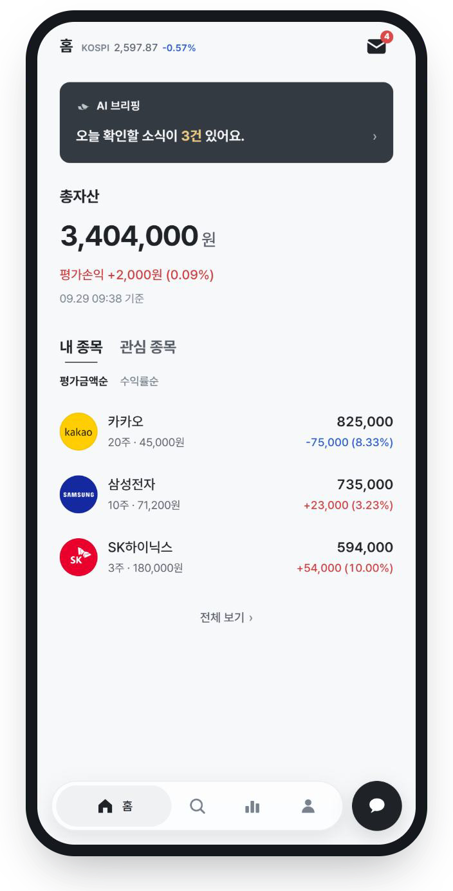
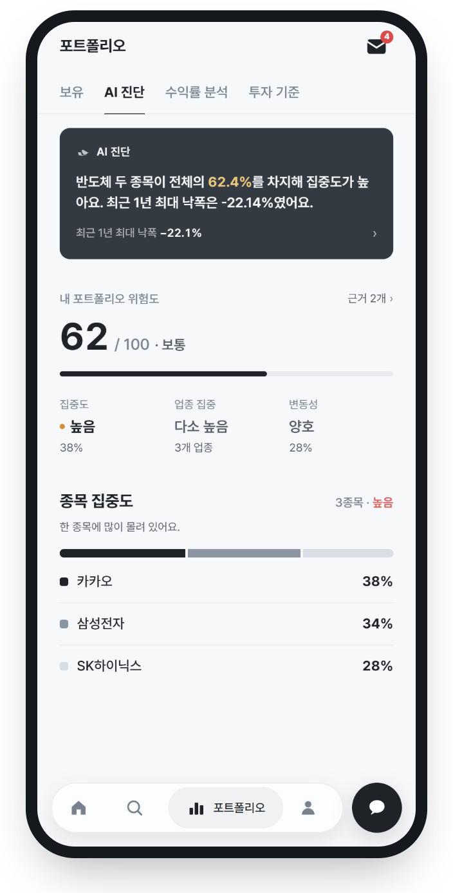
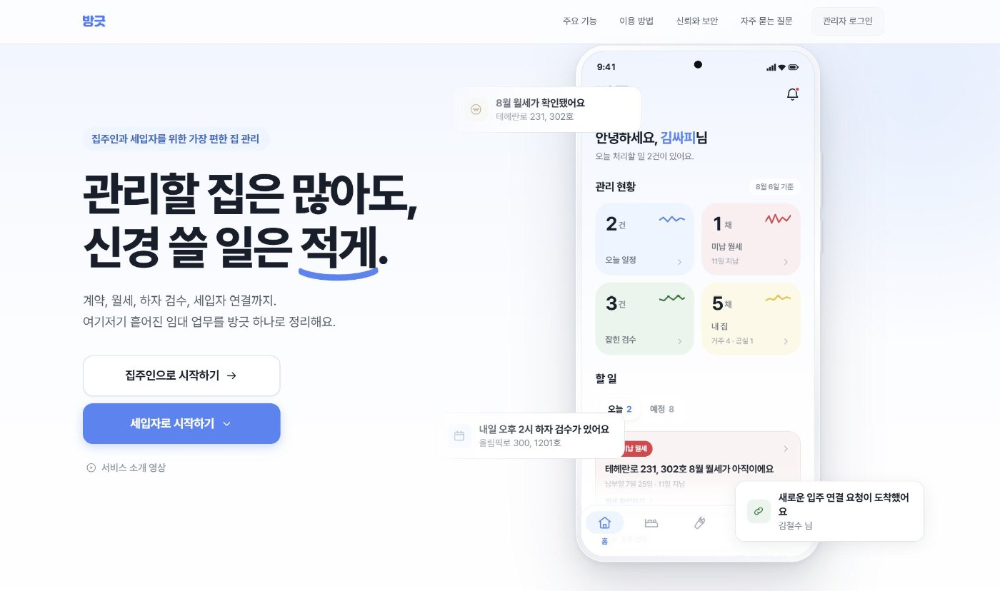
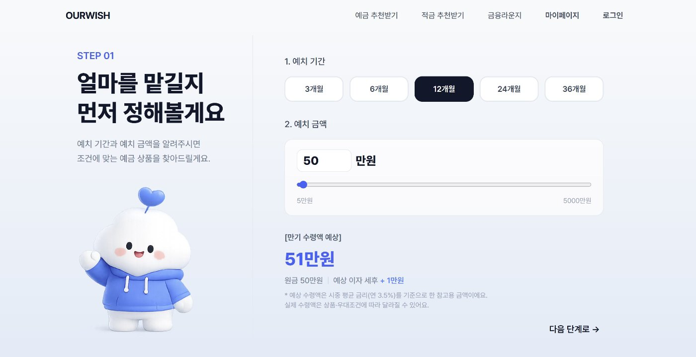
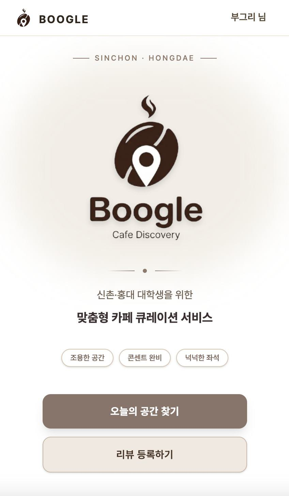
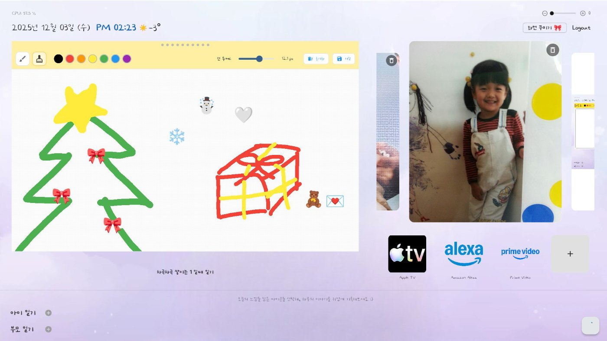
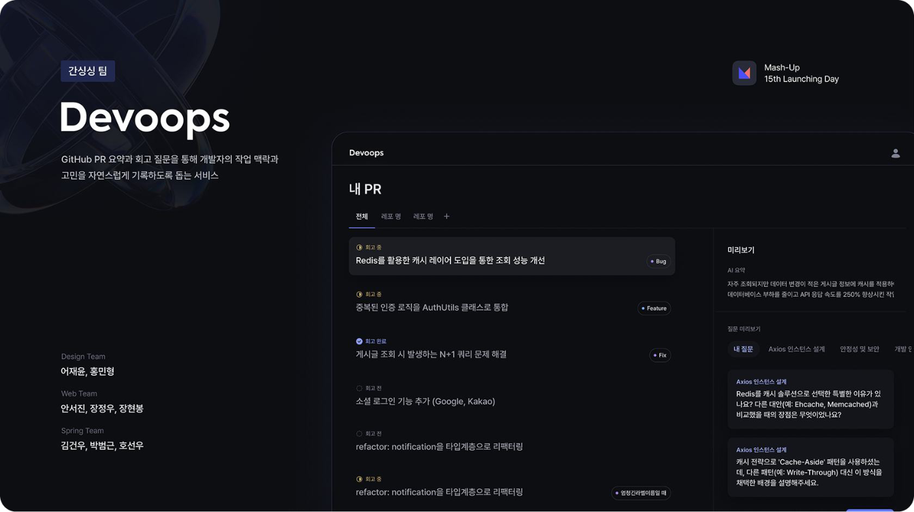
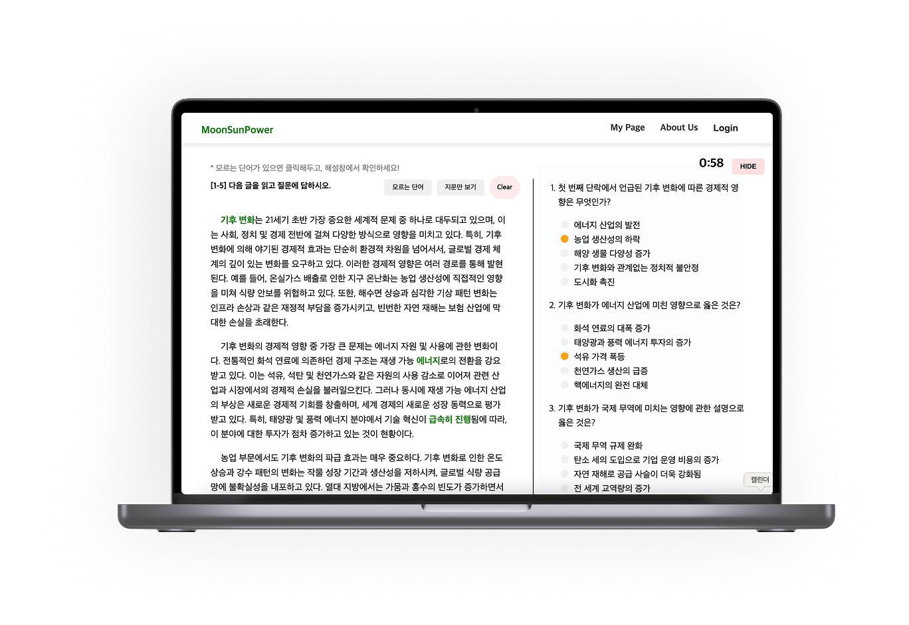

안서진·FRONTEND DEVELOPER
디자인을 이해하고,
사용자의 흐름을 설계하는
프론트엔드 개발자
기획과 UI/UX 설계부터 프론트엔드 구현, 상태 관리와 API 연동까지 연결하며 사용자 경험과 데이터의 정확성을 함께 고민합니다.
WORK
프로젝트


2026.08 – 2026.09
FINCH
PM으로 화면 20개 프로토타입과 디자인 시스템을 세우고, 배포 중 사용자가 로그아웃되던 인증 문제를 직접 해결했습니다.
역할PM, UI/UX·디자인 시스템, 인증, FE
20개
화면 프로토타입
React · TypeScript · Spring Security · OAuth 2.0

2026.07 – 2026.08
방긋
SSAFY 2학기 공통 프로젝트 우수상 (1위)임대인과 세입자가 만나지 않고도 하자를 확인하도록, 검수 진입부터 실시간 영상·종료까지 하나의 앱 흐름으로 이었습니다.
역할기획·UI/UX, React Native FE, WebRTC 검수 연동·실기기 검증
21종
공용 컴포넌트 구현(37종 중)
React Native · TypeScript · Expo · WebRTC

2026.05 – 2026.06
OURWISH
SSAFY 1학기 관통 프로젝트 최우수상 (1위)공시금리 대신 ‘내가 실제로 받을 세후 수령액’으로 예·적금을 비교하게 만들고, 588개 조건 조합을 대조해 1원 차이의 원인까지 찾았습니다.
역할기획·UI/UX, FE, AI 챗봇 UI·프롬프트
588개
FE·BE 조건 조합 대조
Vue · TypeScript · Pinia · TailwindCSS

2026.01 – 2026.07
Boogle
카카오 API의 지점당 45개 조회 제한을 5개 지점 분산·병렬 검색으로 넘어, 카페 밀집 지역의 후보 범위를 넓혔습니다.
역할기획·UI/UX, FE
후보 범위 확대
5개 중심점 분산 + Promise.all 병렬 검색
React · TypeScript · TailwindCSS · Kakao Maps/Local API

2025.09 – 2025.11
Moa
팀장으로 webOS 스탠바이미용 가족 공유 홈 화면을 만들고, 스티커를 옮기는 동안 반복되던 저장을 없애 반응 속도를 개선했습니다.
역할팀장, 기획·UI/UX, FE
인터랙션 지연 해소
스티커 이동 중 저장 제거
Flutter · Dart · webOS · Luna Service API

2025.09 – 2025.11
DevOops
Mash UP 동아리 내 프로젝트 1위PR로 회고 질문을 만드는 서비스에서, 바뀐 답변만 골라 저장하도록 자동 저장을 고쳐 불필요한 API 요청을 줄였습니다.
역할기획, FE
변경된 답변만 저장
3초 무입력 후 병렬 저장
Next.js · TypeScript · TailwindCSS · Vercel

2024.09 – 2025.09
MoonSunPower
서강 융합기술 경진대회 특별상 (AI/SW상, 인기상)생성형 AI 문해력 학습 서비스를 약 1년간 직접 운영했고, 2025년 3월 기준 월 조회수 9,400회·활성 사용자 318명을 기록했습니다.
역할기획·UI/UX, FE, 서비스 운영
9,400회
월 조회수
React · JavaScript · CSS Modules · Google Analytics